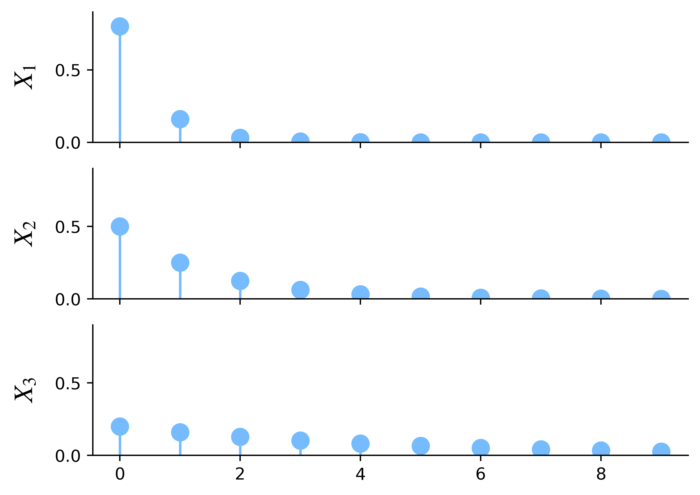
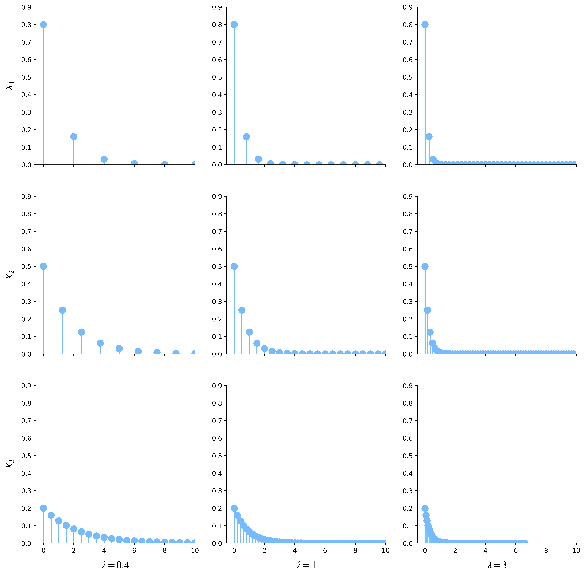
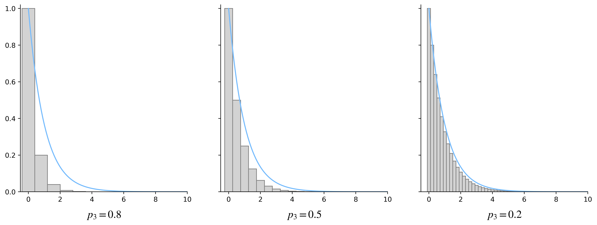
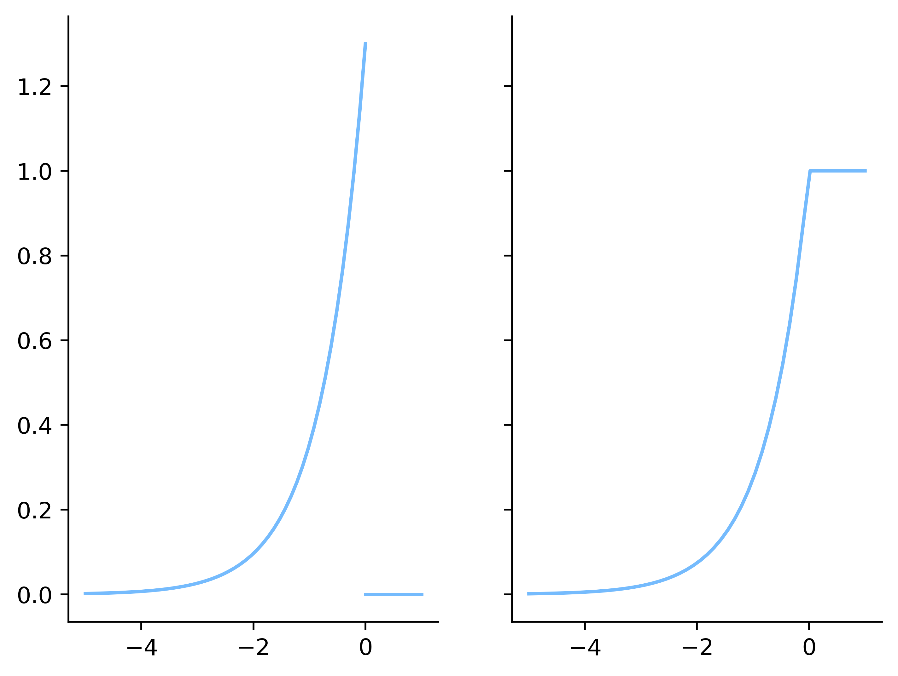

14.5. Il modello esponenziale#
Data una successione \(p_1, p_2, \dots, p_n, \dots\) di valori tali che \(p_i \in (0, 1]\) per ogni \(i \in \mathbb N\), consideriamo la famiglia di variabili aleatorie geometirche \(\{ X_i \sim \mathrm G(p_n), i \in \mathbb N \}\). Per quanto abbiamo visto nel Paragrafo 13.4, la funzione di ripartizione di ogni \(X_i\) sarà
Show code cell content
import matplotlib.pyplot as plt
import numpy as np
import scipy.stats as st
from myst_nb import glue
ps = [0.8, 0.5, 0.2]
Xs = [st.geom(p, loc=-1) for p in ps]
x = np.arange(0, 100)
fig, axes = plt.subplots(len(ps), 1, sharex=True)
for i, (ax, X) in enumerate(zip(axes, Xs)):
pdf = X.pmf(x)
ax.vlines(x[:10], 0, pdf[:10])
ax.plot(x[:10], pdf[:10], 'o')
ax.set_ylim(0, 0.9)
ax.set_ylabel(rf'$X_{i+1}$')
plt.show()
glue("geometric-divergence", fig)

Fig. 14.16 Grafici della funzione di massa di probabilità di \(X_i\) per \(i = 1, 2, 3\), \(p_1 = 0.8\), \(p_2 = 0.5\) e \(p_3 = 0.2\).#
Dato \(\lambda \in [0, +\infty)\), definiamo \(Y_i = \frac{p_i}{\lambda} X_i\) per ogni \(i \in \mathbb N\). In altre parole, \(Y\) si ottiene scalando \(X\) di un fattore opportuno e ciò porta ad «addensare» i relativi punti di massa di quest'ultima (che vengono divisi per una quantità positiva e moltiplicati per un valore tra zero e uno).
Show code cell content
lambdas = [0.4, 1, 3]
fig, axes = plt.subplots(len(ps), 3, sharex=True, figsize=(15, 15))
for col, lambda_ in zip(axes.T, lambdas):
for ax, X, p in zip(col, Xs, ps):
y = x * p / lambda_
pdf = X.pmf(x)
ax.vlines(y, 0, pdf)
ax.plot(y, pdf, 'o')
ax.set_xlim(-0.5, 10)
ax.set_ylim(0, 0.9)
for i, (ax, p) in enumerate(zip(axes.T[0], ps)):
ax.set_ylabel(rf'$X_{i+1}$')
for i, (ax, lambda_) in enumerate(zip(axes[-1], lambdas)):
ax.set_xlabel(rf'$\lambda = {lambda_}$')
plt.show()
glue("geometric-convergence", fig)

Fig. 14.17 Grafici della funzione di massa di probabilità delle variabili aleatorie \(Y_i\) ottenute dalle corrispondenti \(X_i\) della Figura 14.16. Ogni colonna fa riferimento a un valore differente per \(\lambda\).#
La funzione di ripartizione delle \(Y_i\) è nulla per ogni argomento negativo. Concentrandosi invece sugli argomenti non negativi, si ha
Concentriamoci sulla quantità \((1 - p)^{\left\lfloor \frac{\lambda x}{p} \right\rfloor + 1}\), notando che vale
Studiamo il limite per \(p \to 0\) della quantità a sinistra di questa catena di disuguaglianze:
D'altra parte, per quanto riguarda la quantità più a destra in (14.16) si ha che
pertanto applicando il teorema dei due Carabinieri si ottiene
Riassumendo, le distribuzioni delle \(Y_i\) tendono a una distribuzione continua caratterizzata dalla ripartizione
e dalla densità che si ottiene derivando questa stessa funzione:
che si verifica facilmente avere integrale su \(\mathbb R\) uguale a \(1\), sostituendo nell'integranda \(y \coloneqq \lambda x\):
Show code cell content
def exponential_pdf(x, lambda_):
return lambda_ * np.exp(-lambda_ * x)
fig, axes = plt.subplots(1, len(ps), sharey=True, figsize=(15, 5))
lambda_ = 1
for ax, X, p in zip(axes, Xs, ps):
y = x * p / lambda_
pdf = X.pmf(x) / (p/lambda_)
ax.bar(y, pdf, color='lightgray', edgecolor='gray', width=p/lambda_)
ax.set_xlim(-0.5, 10)
ax.set_ylim(0, 1.02)
y_exp = np.linspace(0, 10, 100)
ax.plot(y_exp, exponential_pdf(y_exp, lambda_))
ax.set_xlabel(rf'$p_{i+1} = {p}$')
glue("geometric-convergence-to-exp", fig)

Fig. 14.18 Convergenza della distribuzione geometrica a quella esponenziale. Le barre grige visualizzano l'area delimitata dalle funzioni di densità ottenute convertendo le funzioni di massa di probabilità delle variabili aleatorie \(Y_i\) mostrate nella colonna centrale della Figura 14.17, relative alla scelta \(\lambda = 1\), sovrapposti alla corrispondente funzione di densità di probabilità (14.18).#
Usando la stessa tecnica della Figura 14.11, la Figura 14.18 mostra come le densità ottenute convertendo le funzioni di massa di probabilità delle variabili aleatorie \(Y_i\) tendano alla funzione definita in (14.18). Riassumendo, siamo di fronte a un nuovo tipo di distribuzione continua, che viene chiamata distribuzione esponenziale e che è definita formalmente come seuge, unitamente alla corrispondente famiglia.
Definition 14.8 (La famiglia delle distribuzioni esponenziali)
Dato \(\lambda \in \mathbb R^+\), la distribuzione esponenziale di parametro \(\lambda\) è definita dalla funzione di densità di probabilità
o in modo equivalente dalla funzione di ripartizione
Useremo la notazione \(X \sim \mathrm E(\lambda)\) per specificare che una variabile aleatoria \(X\) segue una distribuzione esponenziale di parametro \(\lambda\). L'insieme di tutte le distribuzioni esponenziali al variare dei valori per il relativo parametro \(\lambda\) famiglia delle distribuzioni esponenziali.
Show code cell content
plt.style.use('sds.mplstyle')
lambda_ = 1.3
fig, axes = plt.subplots(1, 2, sharey=True)
x = np.linspace(-5, 0, 50)
y = lambda_ * np.exp(lambda_ * x)
pl = axes[0].plot(x, y)
color = pl[0].get_color()
x = np.linspace(0, 1)
y = [0] * len(x)
axes[0].plot(x, y, color=color)
x = np.linspace(-5, 1, 50)
y = np.exp(lambda_ * x)
y[x>0] = 1
axes[1].plot(x, y)
glue("negative-exp", fig)

Fig. 14.19 Grafici delle funzioni di densità (sopra) e di ripartizione (sotto) della distribuzione esponenziale negativa di parametro \(\lambda = 3/2\).#
Nomenclatura
La distribuzione esponenziale deve il suo nome al ruolo predominante che la funzione esponenziale (intesa come elevamento di \(\mathrm e\) a una potenza) ha nella definizione delle funzioni di ripartizione e di densità di probabilità. Il fatto che l'argomento di questa funzione sia sempre negativo in corrispondenza delle specificazioni della distribuzione porta alcuni testi a utilizzare il nome «esponenziale negativa». Altre fonti distinguono invece le distribuzioni esponenziali da quelle esponenziali negative, usando la prima denominazione esattamente come ho fatto io, e la seconda per indicare l'equivalente della distribuzione esponenziale in cui però densità e ripartizione sono ribaltate rispetto all'asse delle ordinate, portando quindi ad avere \(\mathbb R^-\) come insieme delle specificazioni. Usando questa accezione, una variabile aleatoria \(X\) segue una distribuzione esponenziale negativa di parametro \(\lambda\) se e solo se la sua funzione di densità di probabilità è
La Fig. 14.19 mostra i grafici della funzione di densità di probabilità e di ripartizione della distribuzione esponenziale negativa che corrisponde al parametro \(\lambda = 3/2\).
La dicitura «famiglia esponenziale» viene inoltre utilizzata per indicare un insieme di famiglie di distribuzioni (che comprende, tra le altre, quelle esponenziali) che godono di particolari proprietà teoriche che in questo libro non vengono considerate. Si tratta quindi di una famiglia di famiglie parametriche di distribuzioni, dunque sarebbe più corretto parlare della meta-famiglia o, come riportato in alcuni testi per essere concisi evitando nel contempo di incorrere in ambiguità, della classe esponenziale.
Nel seguito non tratterò né la famiglia delle distribuzioni esponenziali negative, né la classe esponenziale. Pertanto userò l'aggettivo «esponenziale» per riferirmi solo alle distribuzioni definite in questo paragrafo, o alla corrispondente famiglia parametrica.
Il valore atteso e la varianza delle distribuzioni esponenziali si ottengono facilmente in funzione del loro parametro, applicando le relative definizioni. Più precisamente, il valore atteso di \(X \sim \mathrm E(\lambda)\) si calcola tipicamente integrando per parti: definendo \(f(x) \coloneqq x\) e \(g(x) \coloneqq \mathrm e^{-\lambda x}\) si ha
Procedendo in modo analogo, ma ponendo \(f(x) \coloneqq x^2\), si ottiene
Pertanto \(\mathrm{Var}(X) = \frac{2}{\lambda^2} - \frac{1}{\lambda^2} = \frac{1}{\lambda^2}\).
La famiglia delle distribuzioni esponenziali gode di una particolare proprietà di chiusura rispetto alla scalatura delle sue specificazioni, come indicato in dettaglio di seguito.
Lemma 14.5
Dati \(\lambda \in \mathbb R^+\) e \(X \sim \mathrm E(\lambda)\), posto \(c > 0\) e definita \(Y \coloneqq X/c\), si ha che \(Y \sim \mathrm E(\lambda c)\).
Proof. La funzione di ripartizione di \(Y\) è tale che per ogni \(x \in \mathbb R\), tenuto conto del fatto che \(c\) è positivo,
Nell'ultimo membro di questa uguaglianza si riconosce facilmente la ripartizione di una distribuzione esponenziale di parametro \(\lambda c\).
La distribuzione esponenziale gode della proprietà di assenza di memoria che abbiamo già visto nel Paragrafo 13.4, come dimostrato nel teorema che segue.
Theorem 14.3
Siano \(\lambda \in \mathbb R^+\) e \(X \sim \mathrm E(\lambda)\). Per ogni \(s, t \in \mathbb R^+\), si ha
Proof. Ricordando che \(\mathbb P(X > s) = 1 - F_X(s) = \mathrm e^{-\lambda s}\), dalla definizione di probabilità condizionata si ottiene
ovvero la tesi.
Pertanto le distribuzioni geometrica ed esponenziale sono accomunate dal soddisfare la proprietà di assenza di memoria. Si potrebbe anche dimostrare che non vi sono altre distribuzioni che hanno questa proprietà. In generale, queste due distribuzioni sono fortemente legate dal fatto di modellare bene, sotto opportune condizioni, il concetto di tempo di attesa, intesa come quantificazione del tempo necesario prima del verificarsi di un evento prefissato. Nel caso della distribuzione geometrica, i possibili istanti temporali sono \(t = 0, 1, 2, \dots\) e l'evento al quale siamo interessati è il successo in un particolare esperimento bernoulliano che viene ripetuto a ogni istante temporale, in condizioni di indipendenza. Nel caso della distribuzione esponenziale, invece, ogni numero reale positivo rappresenta una possibile misurazione temporale, e l'evento di cui si attende il verificarsi è definito in modo indiretto dalle seguenti proprietà:
proprietà del processo di Poisson
14.5.1. Momenti della distribuzione esponenziale (*)#
La forma analitica della funzione di distribuzione di probabilità rende particolarmente facile il calcolo della funzione generatrice dei momenti per la distribuzione esponenziale. Infatti, data \(X \sim \mathrm E(\lambda)\)
dove l'ultimo integrale nella catena di uguaglianze è uguale a \(1\) a patto che \(t < \lambda\), perché in questo caso l'integranda è la funzione di densità di probabilità di una distribuzione esponenziale di parametro \(\lambda - t\). Pertanto la funzione generatrice dei momenti è correttamente definita in un intorno dell'origine. Il calcolo delle derivate di questa funzione è semplice: \(m_X'(t) = \lambda (\lambda - t)^{-2}\), \(m_X''(t) = 2 \lambda (\lambda - t)^{-3}\) e in generale \(m_X^{(n)}(t) = n! \lambda (\lambda - t)^{-(n+1)}\), così che \(m_X'(0) = 1/\lambda\) e \(m_X''(0) = 2/\lambda^2\), come precedentemente ricavato. Ricavare i primi momenti centrali non è difficile, ma è necessario effettuare dei conti un po' lunghi. Posto \(Y \coloneqq X - 1 / \lambda\), la funzione generatrice dei momenti centrali di \(X\) coincide con
e dunque \(m_Y(0) = m_X(0) = 1\). La derivata prima di \(m_Y\) è
e \(m'_Y(0) = m_Y(0) \left( \lambda^{-1} - \lambda^{-1} \right) = 0\). La derivata seconda è uguale a
e quindi
il che implica che la skewness della distribuzione esponenziale vale \(\mu_3 / \sigma^3 = m'''_Y(0) \lambda^3 = 2\), indipendentemente dal valore del parametro. Infine,
e la curtosi della distribuzione esponenziale risulta uguale a \(\mu_4 / \sigma^4 - 3 = m^{(4)}_Y(0) \lambda^4 -3 = 6\), anche in questo caso indipendentementedal valore del parametro.
14.5.2. Quantili della distribuzione esponenziale (*)#
Essendo la funzione di ripartizione della distribuzione esponenziale particolarmente facile da invertire, è possibile ricavare una forma analitica per i quantili, come mostrato di seguito.
Lemma 14.6
Dati \(\lambda \in \mathbb R^+\) e \(X \sim \mathrm E(\lambda)\), per ogni \(q \in [0, 1)\) si ha
Proof. Risolvendo \(F_X(\xi_X^q) = q\) rispetto a \(\xi_X^q\) si ottiene
e dunque la tesi.
Corollary 14.2
La mediana di una distribuzione esponenziale di parametro \(\lambda \in \mathbb R^+\) è il valore \(\ln 2 / \lambda\). Il primo e il terzo quartile della stessa distribuzione valgono rispettivamente \((\ln 4 - \ln 3) / \lambda\) e \(\ln 4 / \lambda\), mentre il suo range interquartile è uguale a \(\ln 3 / \lambda\).
Proof. Applicando il Lemma 14.6 per \(q = 1/2, 1/4 \text{ e } 3/4\) e utilizzando le proprietà dei logaritmi si ottiene che:
la mediana della distribuzione è \(-\frac{1}{\lambda} \ln \frac{1}{2} = \frac{\ln 2}{\lambda}\);
il primo quartile è \(-\frac{1}{\lambda} (\ln 3 - \ln 4) = \frac{\ln 4 - \ln 3}{\lambda}\);
il terzo quartile è \(-\frac{1}{\lambda} \ln \frac{1}{4} = \frac{\ln 4}{\lambda}\).
Il range interquartile si ottiene calcolando la sottrazione tra il terzo e il primo quartile:
Show code cell content
fig, ax = plt.subplots(figsize=(6, 0.3))
lambda_ = 1
first_quartile = (np.log(4) - np.log(3)) / lambda_
median = np.log(2) / lambda_
third_quartile = np.log(4) / lambda_
lw = 1
height = 0.2
plt.plot([median, median], [-height, height], c='k', linewidth=1.5)
plt.plot([0, 0], [-.1, .1], c='k', linewidth=lw)
plt.plot([0, first_quartile], [0, 0], c='k', linewidth=lw)
plt.plot([first_quartile, first_quartile], [-height, height],
c='k', linewidth=lw)
plt.plot([third_quartile, third_quartile], [-height, height],
c='k', linewidth=lw)
plt.plot([first_quartile, third_quartile], [height, height],
c='k', linewidth=lw)
plt.plot([first_quartile, third_quartile], [-height, -height],
c='k', linewidth=lw)
plt.plot([third_quartile, third_quartile*1.2], [0, 0], c='k', linewidth=lw)
plt.plot([third_quartile*1.2, third_quartile*1.8], [0, 0],
'k--', linewidth=lw)
plt.text(0, -0.5, '0', ha='center')
plt.text(median, -0.5, r'$\ln 2/\lambda$', ha='center')
plt.axis('off')
pad = 2
plt.xlim(0-pad, 2.5+pad)
plt.show()
glue("exponential-bp", fig)
Fig. 14.20 Diagramma a scatola per la distribuzione esponenziale di parametro \(\lambda = 1\). Il baffo a destra della scatola è parzialmente tratteggiato per enfatizzare il fatto che si estende fino a \(+\infty\).#
14.5.3. Implementazione del modello esponenziale#
In scipy.stats si ottiene un oggetto che descrive una distribuzione
esponenziale utilizzando la funzione expon. Come per tutti i modelli
continui, quando si invoca questa funzione senza specificare il valore
per alcun parametro, l'oggetto restituito fa riferimento a una distribuzione
specifica nella famiglia esponenziale, e precisamente quello che corrisponde
al parametro \(\lambda = 1\). Se si vuole utilizzare una distribuzione
esponenziale per un generico valore \(\lambda\) del parametro, è necessario
specificare l'argomento scale [1], impostandolo a \(1 / \lambda\).
Ciò è dovuto al fatto che, in generale, il valore indicato per scale
modifica la deviazione standard della distribuzione, che nel caso del modello
esponenziale è uguale, appunto, a \(1 / \lambda\).